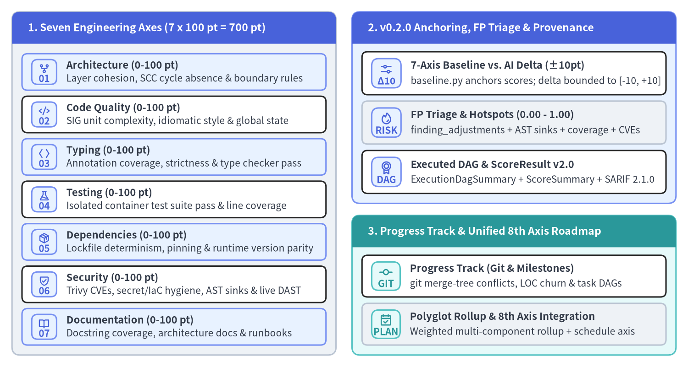
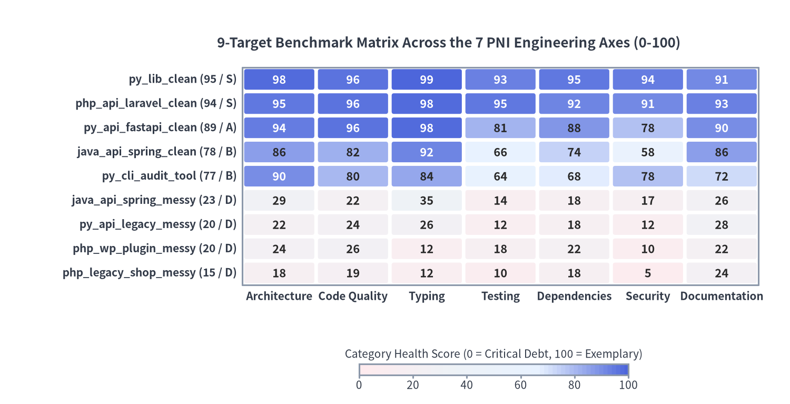

7-Axis Scoring Model & Deterministic Aggregation
Once pni501 (v0.2.0) completes its deterministic static Tree-sitter CST, container runtime, supply-chain security, and live HTTP penetration analyzers alongside schema-enforced AI evaluations, it synthesizes all diagnostic evidence into canonical JSON and SARIF artifacts (ScoreResult v2.0, lightweight ScoreSummary, SARIF 2.1.0, and MigrationPlanResult). Rather than trusting raw LLM ordering, unconstrained score swings, or unverified file paths, baseline.py, aggregator.py, provenance.py, and engine.py compute an objective 7-axis baseline, enforce bounded ±10 pt AI deltas, record transparent false-positive triage (finding_adjustments), stamp an action-level Executed Audit DAG, verify repository paths, apply pni.toml opt-out waivers, and compute module hotspot risk densities deterministically.

Source Code
from drawlib.canvas import save, setup
from drawlib.icons import phosphor
from drawlib.smartarts import CardList, Panel
from drawlib.styles import Styles
setup(width=172, height=92, dpi=150)
axes_panel = Panel(
"1. Seven Engineering Axes (7 x 100 pt = 700 pt)",
header_variant="filled",
header_height=8.0,
style=Styles.Neutral.patch(shape_r=2.0),
header_style=Styles.PrimaryFlat,
text_style=Styles.WhiteBold.patch(text_size=11.0),
)
axes_panel.draw(xy=(3.0, 3.0), width=81.0, height=86.0)
axes_cards = CardList(
style=Styles.WhiteBordered.patch(shape_r=1.4),
text_style=Styles.DarkBold.patch(text_size=10.5),
description_style=Styles.Dark.patch(text_size=10.0),
badge_shape="rounded_rect",
badge_style=Styles.PrimaryNeutral,
badge_text_style=Styles.PrimaryBold.patch(text_size=10.0),
icon_style=Styles.PrimaryBold,
direction="vertical",
spacing=1.5,
)
axes_cards.add(
"Architecture (0-100 pt)",
"Layer cohesion, SCC cycle absence & boundary rules",
badge_text="01",
icon=phosphor.git_fork,
style=Styles.PrimaryNeutral.patch(shape_r=1.4),
)
axes_cards.add(
"Code Quality (0-100 pt)",
"SIG unit complexity, idiomatic style & global state",
badge_text="02",
icon=phosphor.code,
)
axes_cards.add(
"Typing (0-100 pt)",
"Annotation coverage, strictness & type checker pass",
badge_text="03",
icon=phosphor.brackets_angle,
style=Styles.PrimaryNeutral.patch(shape_r=1.4),
)
axes_cards.add(
"Testing (0-100 pt)",
"Isolated container test suite pass & line coverage",
badge_text="04",
icon=phosphor.flask,
)
axes_cards.add(
"Dependencies (0-100 pt)",
"Lockfile determinism, pinning & runtime version parity",
badge_text="05",
icon=phosphor.package,
style=Styles.PrimaryNeutral.patch(shape_r=1.4),
)
axes_cards.add(
"Security (0-100 pt)",
"Trivy CVEs, secret/IaC hygiene, AST sinks & live DAST",
badge_text="06",
icon=phosphor.shield_check,
)
axes_cards.add(
"Documentation (0-100 pt)",
"Docstring coverage, architecture docs & runbooks",
badge_text="07",
icon=phosphor.book_open,
style=Styles.PrimaryNeutral.patch(shape_r=1.4),
)
axes_cards.draw(xy=(5.5, 5.5), width=76.0, height=73.0)
agg_panel = Panel(
"2. v0.2.0 Anchoring, FP Triage & Provenance",
header_variant="filled",
header_height=8.0,
style=Styles.PrimaryNeutral.patch(shape_r=2.0),
header_style=Styles.PrimaryFlat,
text_style=Styles.WhiteBold.patch(text_size=11.0),
)
agg_panel.draw(xy=(88.0, 41.0), width=81.0, height=48.0)
agg_cards = CardList(
style=Styles.WhiteBordered.patch(shape_r=1.4),
text_style=Styles.DarkBold.patch(text_size=10.5),
description_style=Styles.Dark.patch(text_size=10.0),
badge_shape="rounded_rect",
badge_style=Styles.PrimaryNeutral,
badge_text_style=Styles.PrimaryBold.patch(text_size=10.0),
icon_style=Styles.PrimaryBold,
direction="vertical",
spacing=1.6,
)
agg_cards.add(
"7-Axis Baseline vs. AI Delta (±10pt)",
"baseline.py anchors scores; delta bounded to [-10, +10]",
badge_text="Δ10",
icon=phosphor.sliders_horizontal,
)
agg_cards.add(
"FP Triage & Hotspots (0.00 - 1.00)",
"finding_adjustments + AST sinks + coverage + CVEs",
badge_text="RISK",
icon=phosphor.fire,
style=Styles.Neutral.patch(shape_r=1.4),
)
agg_cards.add(
"Executed DAG & ScoreResult v2.0",
"ExecutionDagSummary + ScoreSummary + SARIF 2.1.0",
badge_text="DAG",
icon=phosphor.medal,
)
agg_cards.draw(xy=(90.5, 43.5), width=76.0, height=35.5)
future_panel = Panel(
"3. Progress Track & Unified 8th Axis Roadmap",
header_variant="filled",
header_height=8.0,
style=Styles.SecondaryNeutral.patch(shape_r=2.0),
header_style=Styles.SecondaryFlat,
text_style=Styles.WhiteBold.patch(text_size=11.0),
)
future_panel.draw(xy=(88.0, 3.0), width=81.0, height=35.0)
future_cards = CardList(
style=Styles.WhiteBordered.patch(shape_r=1.4),
text_style=Styles.DarkBold.patch(text_size=10.5),
description_style=Styles.Dark.patch(text_size=10.0),
badge_shape="rounded_rect",
badge_style=Styles.SecondaryNeutral,
badge_text_style=Styles.SecondaryBold.patch(text_size=10.0),
icon_style=Styles.SecondaryBold,
direction="vertical",
spacing=1.6,
)
future_cards.add(
"Progress Track (Git & Milestones)",
"git merge-tree conflicts, LOC churn & task DAGs",
badge_text="GIT",
icon=phosphor.git_commit,
)
future_cards.add(
"Polyglot Rollup & 8th Axis Integration",
"Weighted multi-component rollup + schedule axis",
badge_text="PLAN",
icon=phosphor.calendar_check,
style=Styles.Neutral.patch(shape_r=1.4),
)
future_cards.draw(xy=(90.5, 5.5), width=76.0, height=22.5)
save()
1. The 7 Implemented Quality Axes (700-Point Pool & Grade Mapping)
Every health audit workflow evaluates a target repository across seven standardized engineering axes defined in CategoryScores (src/pni/_actions/base_model.py). Each axis is scored on a 0..100 integer scale (700 total raw points across the seven axes) and paired with evidence-backed rationales in CategoryRationales, synthesizing into a normalized 0..100 overall_score:
| # | Axis Key | Points | Primary Deterministic Signals & Evaluation Scope |
|---|---|---|---|
| 1 | architecture |
0..100 |
Package/layer cohesion, dependency directionality, absence of strongly connected component (SCC) import cycles, and framework/domain boundary separation. |
| 2 | code_quality |
0..100 |
SIG-aligned unit complexity, function length and parameter counts, idiomatic constructs, structured logging, I/O timeout hygiene, and absence of mutable global state. |
| 3 | typing |
0..100 |
Type-annotation coverage (type_safety_coverage_pct), strictness declarations (py.typed, generics, strict_types=1, tsconfig strict), and static type-checker cleanliness. |
| 4 | testing |
0..100 |
Automated test suite breadth, assertion density, isolated container harness pass rate (run_check), smoke checks, and measured line/branch coverage. |
| 5 | dependencies |
0..100 |
Manifest and lockfile determinism, version-pinning discipline, declared runtime compatibility (language_version_mismatches), and absence of undeclared imports. |
| 6 | security |
0..100 |
Application and OS container CVE posture (security_scan via Trivy), secret hygiene, IaC/Dockerfile hardening, CWE-classified CST sinks (dangerous_sinks), and live HTTP penetration test verdicts (web_pentest). |
| 7 | documentation |
0..100 |
Public module/callable docstring coverage (docstring_coverage_pct), onboarding/architecture guides, governance files (SECURITY.md, LICENSE), and operational runbooks. |
1.1 HealthGrade Mapping (S / A / B / C / D)
Both the repository's overall_score and each step's AuditDimensionScore map deterministically to a five-tier HealthGrade via score_to_grade() in src/pni/_workflows/aggregator.py:
| Grade | Score Threshold | Engineering Interpretation |
|---|---|---|
S |
90 .. 100 |
Exemplary reference architecture with near-zero structural, runtime, or security debt. |
A |
80 .. 89 |
Production-ready engineering hygiene with minor, non-blocking improvement opportunities. |
B |
70 .. 79 |
Sound structural foundation carrying localized test coverage, dependency, or hardening gaps. |
C |
60 .. 69 |
Elevated maintainability or operational risk requiring prioritized remediation before scaling. |
D |
< 60 |
Critical architectural, build/runtime, or exploitable security debt requiring structured intervention. |
1.2 Progress Track & Future 8th Axis (development_status)
Alongside the 7-axis health score (ScoreResult), pni501 provides a dedicated Progress & Git Governance track (category: progress, ProgressResult) validated via pni progress init / pni progress validate that inspects milestone adherence, git merge-tree branch conflicts, LOC/test trajectories, and commit churn. On the roadmap, these delivery-velocity signals will also unify directly into an eighth score axis (Development Status (development_status)), raising early warnings whenever schedule slippage coincides with pre-deadline churn spikes or test regressions.
2. v0.2.0 Evidence Anchoring, FP Triage & Executed Audit DAG
To make every diagnostic score reproducible, auditable, and resistant to LLM drift, pni501 v0.2.0 introduces three structural guarantees across baseline.py, aggregator.py, provenance.py, and ScoreResult (schema_version = "2.0").
2.1 7-Axis Evidence Delta (Deterministic Baseline vs. Adjusted Δ)
Before any AI judgment is accepted, compute_baseline_evaluation() (src/pni/_workflows/baseline.py) derives objective 7-axis baseline_scores (0..100), deterministic pre_findings (each assigned a stable content-addressed det-<8-hex> ID), and pre_rule_checks directly from ProjectFacts, AstFacts, RuntimeFacts, and SecurityFacts:
- Deterministic Deductions: Deductions are computed deterministically from missing lockfiles or unpinned dependencies, circular imports, complex functions, hardcoded secrets, CWE dangerous sinks, typing/docstring coverage shortfalls, failing container builds/tests, low line coverage, and
runtime_coreTrivy CVEs. - Bounded Qualitative Adjustment (
±10 pt): Duringai_interpretsteps (InterpretationInput), the AI agent evaluates architectural nuance, contextual risk, and code readability by supplyingbaseline_deltaper axis. Pydantic's_validate_baseline_delta_bounds()strictly enforcesMAX_BASELINE_AI_DELTA = 10(-10 <= delta <= +10), preventing arbitrary score inflation or collapse. - Transparent Delta Reporting: Both
ScoreResultand lightweightScoreSummary(*_summary.json) persistbaseline_scoresalongside finalcategory_scores. Downstream Drawlib reports render an explicit 7-Axis Deterministic Baseline vs. Final Score (Baseline | AI Δ | Final | Rationale) comparison table in Chapter 4 (format_baseline_vs_final_lines()).
2.2 Finding False-Positive Triage (finding_adjustments)
Deterministic scanners inevitably surface context-dependent hits — for example, build-time pip@24.2 toolchain CVEs bundled inside a Python base image that are unreachable at application runtime, or static unpinned version range alerts already neutralized by runtime constraints. Rather than silently dropping findings or polluting scores, pni501 v0.2.0 provides an auditable False-Positive Triage mechanism (FindingAdjustment in src/pni/_actions/base_model.py):
- Targeted Adjustments by
finding_id: BothInterpretationInputandScoreSubmissionInputacceptfinding_adjustments: list[FindingAdjustment], where each entry targets a specific deterministicdet-xxxxxxxxID with:action:"waive"(exclude verified false positive from active findings) or"reclassify"(adjustnew_severity, appending[AI reclassified: <reason>]to evidence).reason: Mandatory technical justification (min_length=10).
- Auditable Triage Trail (
triaged_adjustments):apply_finding_adjustments()(src/pni/_workflows/baseline.py) applies all adjustments deterministically duringcompile_workflow_digest()and records every waived or reclassified item inScoreResult.triaged_adjustments. Reports display both the Finding Source Split (deterministicvs.ai) and the complete AI False-Positive Triage Log in Chapter 4 so human reviewers can verify every single decision.
2.3 Executed Audit DAG (ExecutionDagSummary & AuditScopeMetadata)
Every completed ScoreResult, MigrationPlanResult, ProgressResult, and polyglot Rollup artifact embeds an immutable Executed Audit DAG built by build_execution_dag_summary() (src/pni/_workflows/provenance.py):
- Action-Level Stage Graph (
ExecutionStageNode): Records each logical workflow stage with itsstage_id,label, executionmode(AUTO,AI,HYBRID,ASK, orSKIP), finalstatus(completed,skipped,pending,in_progress), upstreamneedsdependencies,rules_count, quantitative stagehighlight(e.g.,14 files, 435 LOC, 0 sinks,build=passed, tests=4/4, cov 85.2%), and explicitskip_reasonwhenever a conditional stage or optional probe was skipped. - Immutable Inspection Provenance (
AuditScopeMetadata): Stamps exacttarget_root,source_targets,test_targets,doc_targets,exclude_globs, primarylanguage, detectedcompanion_languagesanddetected_frameworks, live Git HEAD state (git_branch,git_sha,git_dirty), exacttools_used(e.g., Tree-sitter CST, Docker harness, Trivyfs+image,web_pentest), and a normalizedartifact_manifestpointing to*_score.json,*_summary.json,*_findings.sarif, and synced_facts/JSON files.
3. Deterministic Enrichment & Pre-Sorting in aggregator.py
When an AI agent submits a compact ScoreSubmissionInput during the terminal emit_score action, src/pni/_workflows/engine.py never trusts raw LLM sorting or unverified file references. Instead, it re-assembles the WorkflowFactsBundle from .pni/cache/workflow_state.db, verifies every referenced file_path and target_files entry against the real repository and AstFacts.module_inventory, stamps immutable provenance (workflow_id, workflow_run_id, UTC evaluated_at, target_root, facts_file, recomputed grade, execution_dag, and metrics_snapshot), emits *_score.json, *_summary.json, and *_findings.sarif, and populates list fields from aggregator.py:compile_workflow_digest():
3.1 Weakest-First Dimensions, Rule Compliance & Consolidated Findings
audit_dimensions(Weakest-First Step Scorecards): Aggregates every completedai_interpretaction into anAuditDimensionScore(pass_count,warn_count,fail_count,score,grade) sorted ascending by(score, -fail_count, -warn_count, seq)so the weakest engineering dimensions appear first. Ifstep_scoreis omitted,_compute_step_score()deterministically falls back to the mean ofsuggested_scoresor100 - sum(SEVERITY_DEDUCTION)(critical=35,high=20,medium=10,low=3,info=1).rule_compliance(fail -> warn -> pass -> not_applicable):normalize_step_rule_checks()guarantees every active rule on every step receives a stampedRuleCheckResult(inferring verdicts from step findings when omitted).merge_and_sort_rule_compliance()merges deterministicpre_rule_checkswith step verdicts — retaining the strictest status while concatenating unique evidence — and sorts by(STATUS_RANK[status], rule_id).findings& Location-Groupedconsolidated_findings: Afterapply_finding_adjustments()and[[opt_out]]filtering,deduplicate_and_sort_findings()orders findings bycritical -> high -> medium -> low -> info. Next,consolidate_findings_by_location()(src/pni/_actions/base_model.py) buckets overlapping violations sharing the exact same(file_path, line)into a single multi-ruleConsolidatedFinding(rule_ids,combined_evidence,merged_recommendation), preventing duplicate table rows in downstream PDF/HTML reports.action_plan(P0 -> P1 -> P2):deduplicate_and_sort_actions()deduplicates remediation items by(priority, title.lower())and sorts deterministically by(PRIORITY_RANK[priority], category, title).- Declarative
pni.tomlOpt-Out Waivers (opt_outs):_filter_findings_by_opt_out()andnormalize_step_rule_checks()honor[[opt_out]]entries declared inpni.toml(matching by rule/checkidand optional filescopeglobs), waiving matching findings, marking repo-wide opted-out rules asnot_applicable, and recording transparentAppliedOptOutaudit trails inScoreResult.opt_outs.
3.2 Module Hotspot Risk Density Formula (0.00 to 1.00)
compute_module_hotspots() scores every discovered source module and flagged infrastructure file on a bounded [0.00, 1.00] scale sorted descending by (-risk_score, -loc, file_path). Clean modules with zero findings and zero structural/runtime/security bonuses receive a baseline healthy score of 0.06 (_BASE_HEALTHY_RISK), whereas flagged modules combine four deterministic signal sources:
SEVERITY_RISK_WEIGHT = {
"critical": 0.45,
"high": 0.28,
"medium": 0.15,
"low": 0.06,
"info": 0.02,
}
_BASE_HEALTHY_RISK = 0.06
# Per-file hotspot risk density in [0.00, 1.00]:
# 1. raw_weight = sum(SEVERITY_RISK_WEIGHT[f.severity] for f in file_findings)
# 2. ast_bonus = +0.12 (complex_functions) + 0.14 (global_state)
# + 0.25 (hardcoded_secrets) + min(0.30, 0.12 * sink_count)
# 3. cov_bonus = +0.16 (0.0% line coverage) or +0.10 (0.1%..49.9% coverage, >=5 stmts)
# 4. sec_bonus = min(0.30, 0.15 * trivy_secret_or_iac_hits)
risk_score = round(min(1.0, raw_weight + ast_bonus + cov_bonus + sec_bonus), 2)
4. Path-Grounded MigrationPlanResult Schema
For repositories requiring structured modernization (category: migration, based_on: <audit_workflow_id>), the emit_migration_plan action validates and persists MigrationPlanResult (src/pni/_actions/migration_analyze/models.py), verifiable via pni validate-migration-plan <path>:
- Execution Guardrails: Pins
transformation_mode(same_lang_upgrade,architectural_restructure, orcross_stack_replacement),migration_strategy(phased_pr,strangler_fig, orrewrite),api_compatibility(strict,versioned_v2, orflexible), andbug_handling_policy(ask_human,preserve_behavior, orfix_in_phase3), alongsideconfirmed_assumptionsand explicitnon_goals. target_axes(MigrationAxis) &target_architecture: Captures each As-Is to To-Be transformation vector (language_runtime,framework,architecture_pattern,database_persistence,cache_state,auth_security,messaging_async,container_cicd,custom) with groundedaffected_files, plustarget_layers(allowed_dependencies,forbidden_imports) and file-levelcomponent_mappings.decision_log(DecisionLogItem,DEC-01..NN): Isolates ambiguous legacy behaviors ("Spec vs. Bug" under Hyrum's Law) withcurrent_behavior,impact_if_changed, andrecommended_optionfor Product Owner sign-off prior to Phase 3 business-logic changes.phase_gates(Phases 0..4) &pr_wbs(PR-01..NN): Enforces a 5-stage gated roadmap — Phase 0 (Characterization & Harness Recovery), Phase 1 (Cycle Cutting & Port Extraction), Phase 2 (Mechanical Codemods & DB/Cache Adapters), Phase 3 (Typed DTOs & Approved Fixes), and Phase 4 (Cutover & CI/Container Hardening) — paired with topologically ordered PR tickets enriched with deterministicMigrationFacts(refactoring_waves,cycle_cuts,implicit_contracts,boundary_touchpoints, andmechanical_codemods).
5. Multi-Language Benchmark Calibration Matrix
To validate scoring calibration across clean production architectures, mid-tier services, and severely degraded legacy codebases, pni501 maintains nine end-to-end benchmark repositories under examples/{python,java,php}/ (and live v0.2.0 bilingual sample reports in the Sample Reports Gallery).

Source Code
from drawlib.canvas import save, setup
from drawlib.charts.heatmap import HeatmapChart
from drawlib.styles import Styles
setup(width=176, height=90, dpi=150)
chart = HeatmapChart(
styles=[Styles.DangerNeutral, Styles.Neutral, Styles.PrimaryNeutral, Styles.PrimaryFlat],
x_categories=[
"Architecture",
"Code Quality",
"Typing",
"Testing",
"Dependencies",
"Security",
"Documentation",
],
min_value=0.0,
max_value=100.0,
cell_gap=0.8,
cell_r=0.5,
value_format="{:.0f}",
auto_contrast_text=True,
axis_line_style=Styles.Muted,
axis_text_style=Styles.DarkBold.patch(text_size=10.0),
value_text_style=Styles.DarkBold.patch(text_size=10.5),
width=144.0,
height=62.0,
title="9-Target Benchmark Matrix Across the 7 PNI Engineering Axes (0-100)",
title_style=Styles.DarkBold.patch(text_size=12.5),
)
chart.add_row("py_lib_clean (95 / S)", [98, 96, 99, 93, 95, 94, 91])
chart.add_row("php_api_laravel_clean (94 / S)", [95, 96, 98, 95, 92, 91, 93])
chart.add_row("py_api_fastapi_clean (89 / A)", [94, 96, 98, 81, 88, 78, 90])
chart.add_row("java_api_spring_clean (78 / B)", [86, 82, 92, 66, 74, 58, 86])
chart.add_row("py_cli_audit_tool (77 / B)", [90, 80, 84, 64, 68, 78, 72])
chart.add_row("java_api_spring_messy (23 / D)", [29, 22, 35, 14, 18, 17, 26])
chart.add_row("py_api_legacy_messy (20 / D)", [22, 24, 26, 12, 18, 12, 28])
chart.add_row("php_wp_plugin_messy (20 / D)", [24, 26, 12, 18, 22, 10, 22])
chart.add_row("php_legacy_shop_messy (15 / D)", [18, 19, 12, 10, 18, 5, 24])
chart.draw(xy=(28.0, 21.0))
chart.draw_colorbar(
xy=(80.0, 6.5),
text_style=Styles.Dark.patch(text_size=10.0),
length=60.0,
thickness=2.4,
num_ticks=6,
value_format="{:.0f}",
label="Category Health Score (0 = Critical Debt, 100 = Exemplary)",
)
save()
5.1 Reference Calibration Targets Across Clean, Mid-Tier, and Legacy Codebases
The nine benchmark targets span three Grade S/A reference implementations, two realistic mid-tier Grade B repositories (where pni501 surfaces container base-image CVEs, unauthenticated Actuator/API routes, or branch-coverage gaps despite clean code structure), and four severely degraded legacy applications:
| Workflow ID | Project Name | Stack Profile | Overall | Arch | Qual | Type | Test | Deps | Sec | Docs | Reference Target (examples/...) |
|---|---|---|---|---|---|---|---|---|---|---|---|
py_lib_clean |
metrics-kit |
Python 3.12 library | 95 (S) | 98 | 96 | 99 | 93 | 95 | 94 | 91 | examples/python/lib_clean |
php_api_laravel_clean |
order-fulfillment |
PHP 8.3 / Laravel 11 API | 94 (S) | 95 | 96 | 98 | 95 | 92 | 91 | 93 | examples/php/api_laravel_clean |
py_api_fastapi_clean |
order-dispatch |
Python 3.12 / FastAPI | 89 (A) | 94 | 96 | 98 | 81 | 88 | 78 | 90 | examples/python/api_fastapi_clean |
java_api_spring_clean |
inventory-service |
Java 21 / Spring Boot 3 | 78 (B) | 86 | 82 | 92 | 66 | 74 | 58 | 86 | examples/java/api_spring_clean |
py_cli_audit_tool |
logpulse |
Python CLI utility | 77 (B) | 90 | 80 | 84 | 64 | 68 | 78 | 72 | examples/python/cli_audit_tool |
java_api_spring_messy |
legacy-billing |
Legacy Java 8/11 Spring | 23 (D) | 29 | 22 | 35 | 14 | 18 | 17 | 26 | examples/java/api_spring_messy |
py_api_legacy_messy |
legacy-order-hub |
Legacy Python Flask API | 20 (D) | 22 | 24 | 26 | 12 | 18 | 12 | 28 | examples/python/api_legacy_messy |
php_wp_plugin_messy |
wp_plugin_messy |
Procedural WP plugin | 20 (D) | 24 | 26 | 12 | 18 | 22 | 10 | 22 | examples/php/wp_plugin_messy |
php_legacy_shop_messy |
legacy_shop_messy |
Procedural PHP 7.4 shop | 15 (D) | 18 | 19 | 12 | 10 | 18 | 5 | 24 | examples/php/legacy_shop_messy |
Next, see Drawlib Visual Reporter for how pni501 compiles ScoreResult and MigrationPlanResult into self-contained flat Drawlib reports, explore live v0.2.0 interactive outputs in the Sample Reports Gallery, or view Supported 55 Languages for Tree-sitter CST analyzer details.